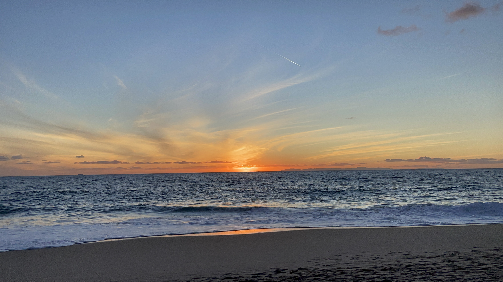
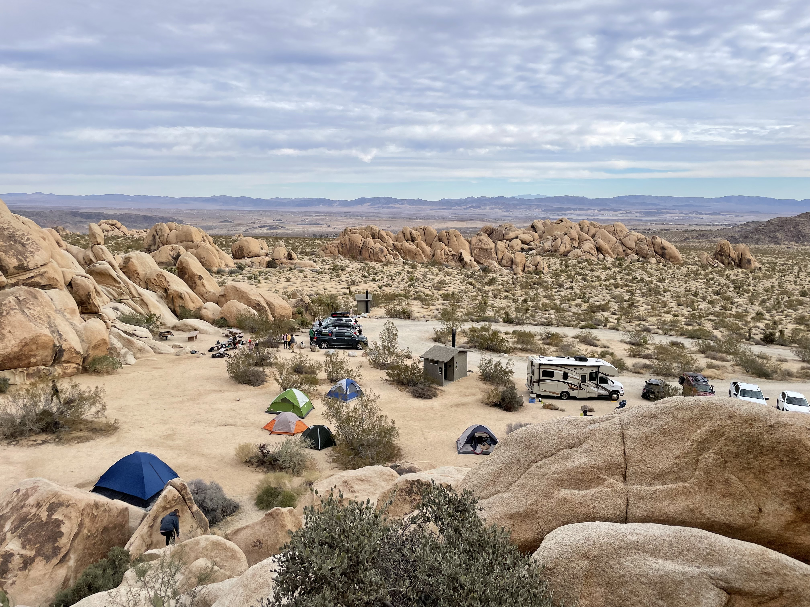
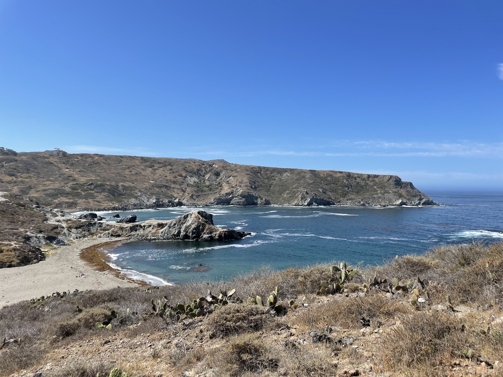
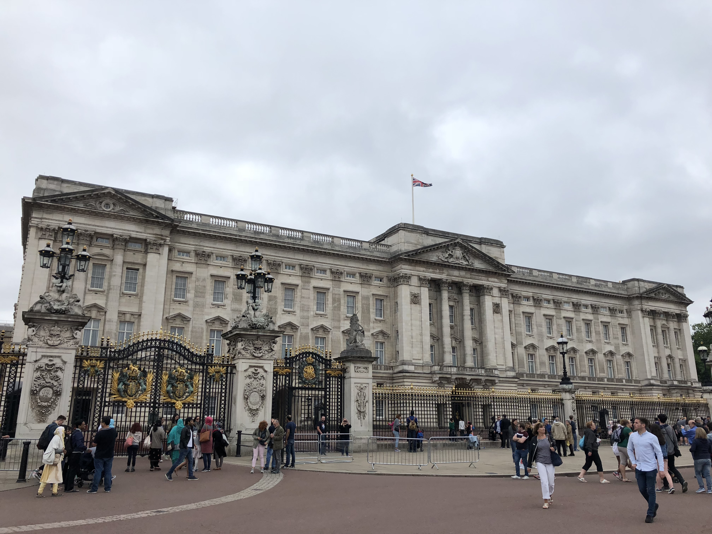
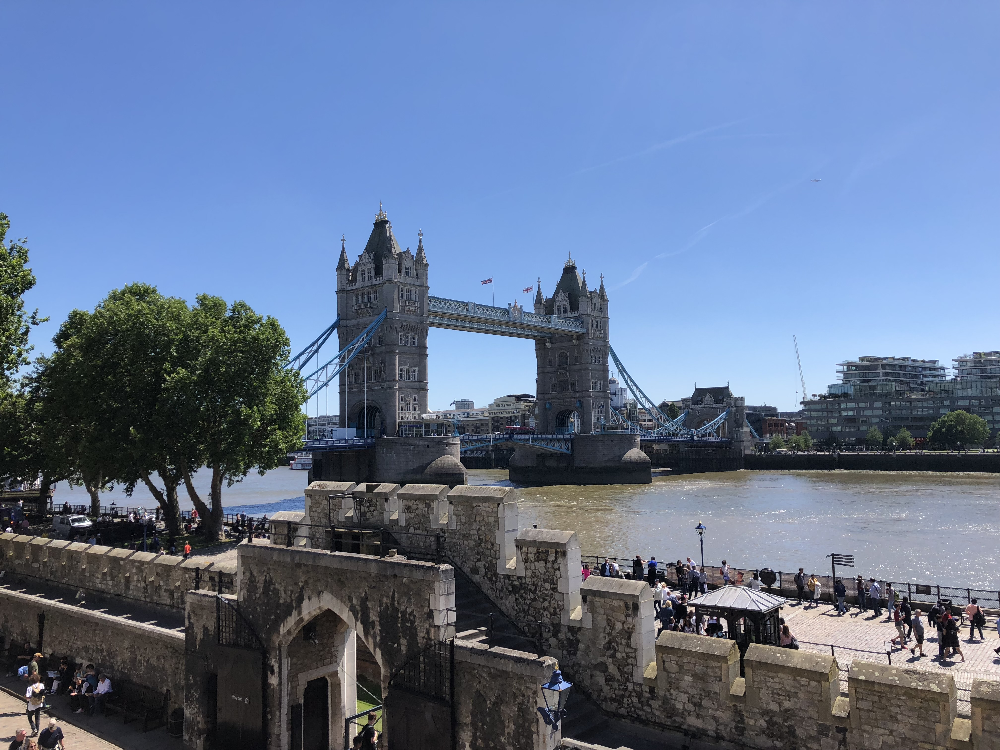
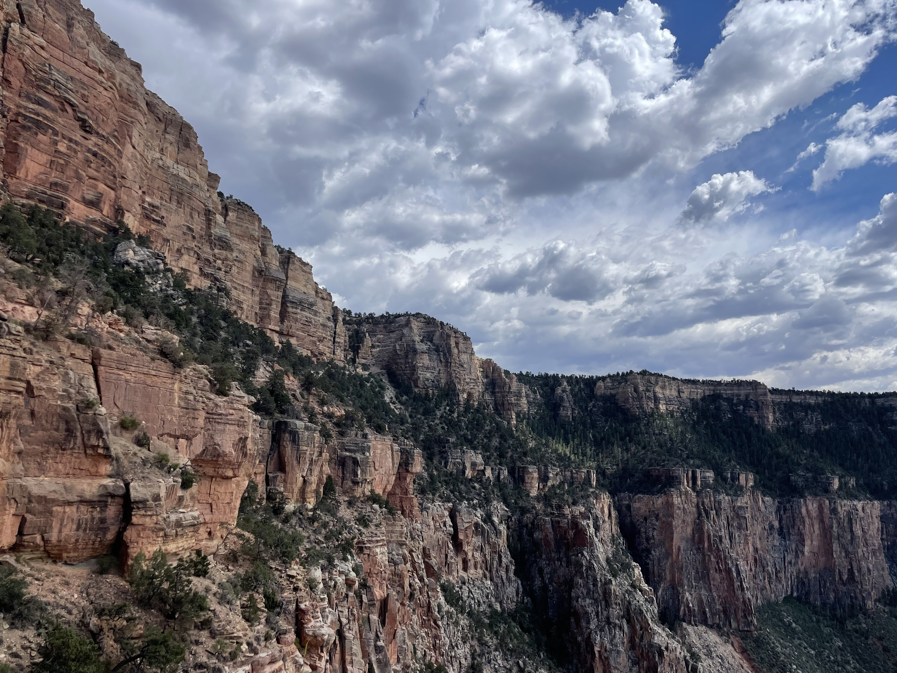
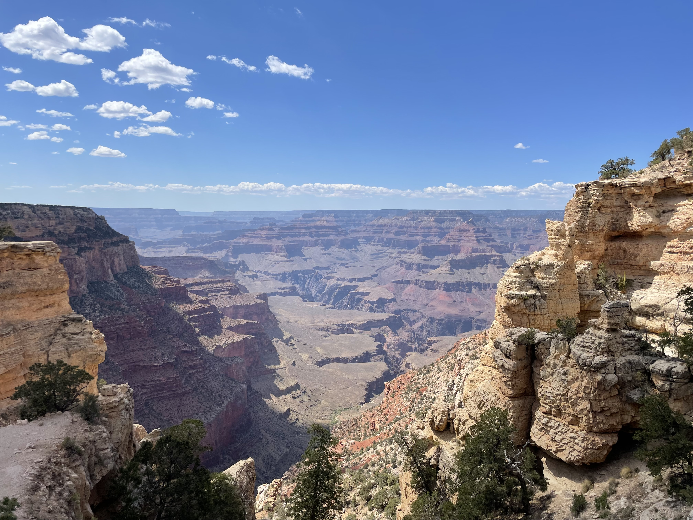
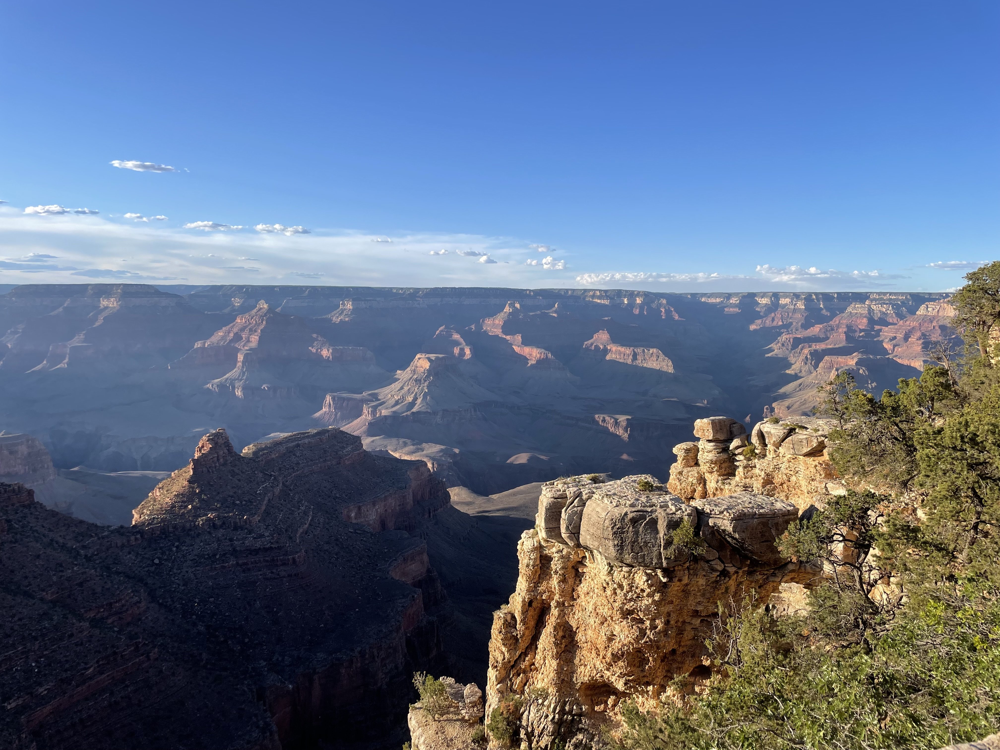

California
Aliso Beach
Johua Tree National Park

Dinseyland
Catalina Island
Top of pageLondon
Buckingham Palace
Tower Bridge

Harry Potter and the Cursed Child
Top of pageGrand Canyon
Sounthern Rim
South Kaibab Trail
Rim Trail
Top of page